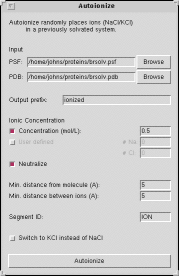

Why adding ions? Some proteins may be (and sometimes are) sensitive
to the ionic strength of the surrounding solvent. Even when that is not the
case, adding ions is commonly used to make the net electric charge of the
system zero. In molecular dynamics (MD) simulations with periodic boundary
conditions, the energy of the electrostatic interactions is often computed
using the particle-mesh Ewald (PME) summation, which requires the system
to be electrically neutral. The vmd autoionize plugin provides a quick and
easy means to make the net charge of the system zero by adding sodium and
chlorine ions to the solvent. Ion placement is random, but but there are
minimum distances between ions and molecule as well as between any two ions.
Graphical Interface
The graphical interface provides some reasonable default values for
adding ions to a solvated system, with the same functionality provided
by the text command interface described below.
Text command usage.
The text command syntax is simple. To load the plugin, run
the following command:
package require autoionize
Running autoionize with no arguments gives a short overview
of the syntax. You can add ions in either of the following two ways:
autoionize -psf file.psf -pdb file.pdb -is 0.05
tells autoionize to compute the sodium and chlorine ion numbers so
that the net chatge of the system is zero, and the average ionic concentration
of the solution is (in this case) 0.05. Note: Autoionize defines this as the TOTAL ion concentration, for example, (#Na + #Cl)/V. Thus, this figure will be twice the ionic strength of the same solution (for monovalent ions). Alternatively,
autoionize -psf file.psf -pdb file.pdb -nna NNa -cl NCl
explicitly makes autoionize place the given numbers of the sodium
(NNa) and chlorine (NCl) ions. In this case, the system may not be electrically
neutral.
Additional options for autoionize include the following:
- -o <prefix>
: output file prefix (default 'ionized')
- -from <distance> : min distance from
molecule (default 5A)
- -between <distance> : min distance between ions (default
5A)
Adding ions to a 100,000-atom system takes about 30 seconds on a 766MHz laptop.
Changing ion type. For some biological molecules, one may want to place
potassium ions instead of sodium. That can be easily done by using the sod2pot.tcl script.
source sod2pot.tcl
takes the coordinate file ("ionized.pdb") and the structure file ("ionized.psf")
of the original system and creates files "sod2pot.psf/pdb", where sodium
ions are replaced with potassium. With minor changes (knowledge of Tcl programming
is not necessary), this script can be used for replacing any kind of ions
with any other kind.
Caveats and Limitations. Autoionize places ions randomly,
which is acceptable if the electric charge of the molecule is relatively
small. If the charge is big, the ions no longer are nearly uniformly distributed
in the solvent; instead, they form a screening clowd around the molecule.
An example of such systems is a double-helix DNA, which carries a 1e charge
per base pair. In such cases, one needs to place ions with regard to the
electrostatic potential of the molecule.